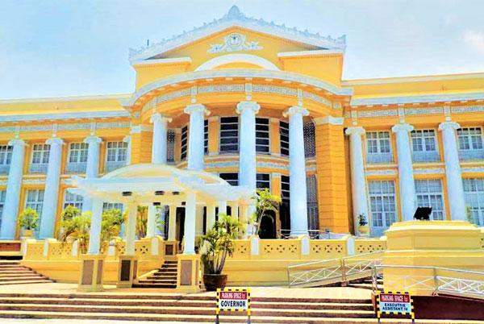
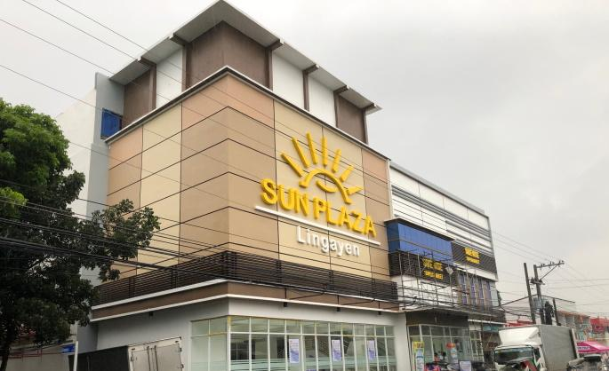

Rizal Park Lingayen is a public park and civic landmark located in Lingayen, Pangasinan, Philippines. Dedicated to national hero Jose Rizal, it serves as the town's central plaza and a gathering space for cultural, historical, and recreational events.
Historical Background
Rizal Park Lingayen commemorates the life and ideals of Dr. Jose Rizal, whose writings and activism helped shape Philippine nationalism. The park serves as a symbol of patriotism and civic pride, reflecting Lingayen's dedication to preserving the country's historical memory.
At the heart of the park stands a statue of Rizal, often surrounded by manicured gardens that provide a peaceful setting for reflection. Like many towns in the Philippines, Lingayen established its Rizal Park as a civic space where citizens could gather to honor the nation's heroes.
Over the years, it has become a venue for educational activities, with students and visitors learning about Rizal's role in inspiring the Philippine Revolution. The park also represents the community's ongoing commitment to national identity and civic responsibility.
Layout and Surroundings
The park is strategically located near the Pangasinan Provincial Capitol and the scenic Lingayen Gulf, making it part of a larger government and cultural district. Its open lawns, shaded walkways, and landscaped flowerbeds create an inviting space for relaxation, reflection, and community gatherings.
Visitors often enjoy strolling through tree-lined paths while taking in views of the surrounding civic buildings. The park's design combines aesthetics with functionality, allowing it to host public events without compromising its tranquil atmosphere.
Its central location and well-maintained grounds make it a key point for civic ceremonies, including Independence Day celebrations, cultural festivals, and school field trips. By linking natural beauty with urban planning, the park enhances both the daily lives of residents and the visitor experience.

Civic and Cultural Role
Rizal Park Lingayen serves as more than just a scenic landmark. It is a hub for community life. Residents and visitors alike use the park for recreation, gatherings, and educational programs, making it an accessible green space in the heart of the town.
The park frequently hosts concerts, civic programs, and commemorative events, reinforcing its role as a venue for collective memory and cultural celebration. Its open spaces accommodate both formal ceremonies and informal leisure activities, making it versatile and inclusive.
By being adjacent to key provincial offices, the park also holds symbolic importance in the social and political life of Lingayen. It bridges heritage and daily life, providing a shared space where history, culture, and community converge.
